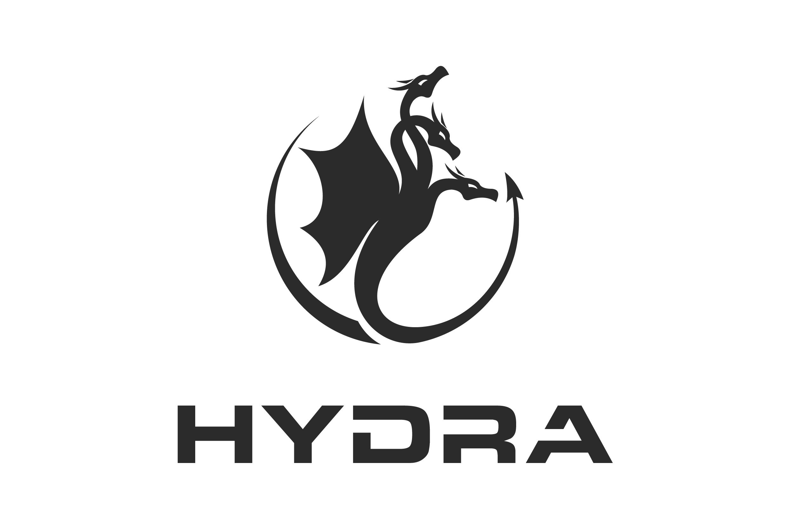
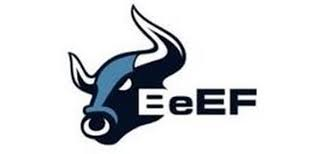
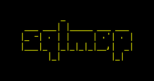
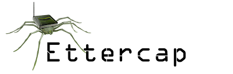

Exploit vulnerabilities and gain initial access to target systems using these powerful penetration testing tools. This phase focuses on breaking into systems through various attack vectors.
The gaining access phase involves actively exploiting vulnerabilities to establish a foothold in the target system. This can be achieved through various methods including exploitation frameworks, password attacks, and web application vulnerabilities.
Using known vulnerabilities to gain unauthorized access to systems.
Cracking or bypassing authentication mechanisms.
Exploiting web application vulnerabilities like SQLi, XSS.
A powerful exploitation framework used to test, validate, and exploit system vulnerabilities in ethical hacking scenarios.

A fast and flexible password cracker that supports numerous protocols for brute-force attacks on login services.
A fast password cracker designed to detect weak Unix and Windows passwords using dictionary and brute-force attacks.
A graphical cyber attack management tool for Metasploit that visualizes targets and recommends exploits for streamlined penetration testing.
An advanced GPU-accelerated password recovery tool supporting hundreds of hash types for fast and flexible cracking.

The Browser Exploitation Framework (BeEF) is a powerful tool for targeting web browsers via client-side attack vectors.
A speedy, parallel, and modular login brute-forcer for remote authentication services like SSH, FTP, HTTP, and more.

An automated tool for detecting and exploiting SQL injection vulnerabilities in web applications with full DB takeover support.
A post-exploitation tool for dumping Windows credentials from memory and performing pass-the-hash attacks on compromised machines.
A Swiss Army knife for pentesters working with Active Directory networks. Supports SMB, RDP, WinRM, and more.
A powerful LLMNR/NBT-NS/MDNS poisoner used to capture hashes and credentials on Windows-based networks.
A high-speed network authentication cracking tool designed for large-scale audits of multiple services like SSH, RDP, FTP, and more.
A post-exploitation framework that uses PowerShell and Python agents to maintain control, extract data, and perform lateral movement.
A payload generator and encoder that combines msfpayload and msfencode. Used to craft custom backdoors and test antivirus evasion.

A comprehensive suite for man-in-the-middle attacks on LAN. Supports sniffing, ARP poisoning, and real-time connection manipulation.